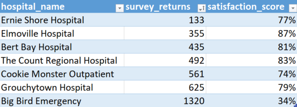
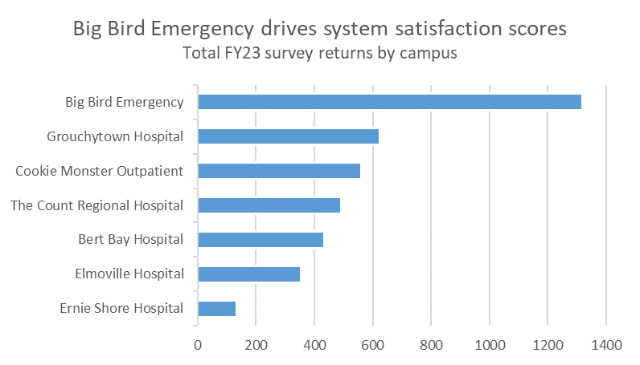
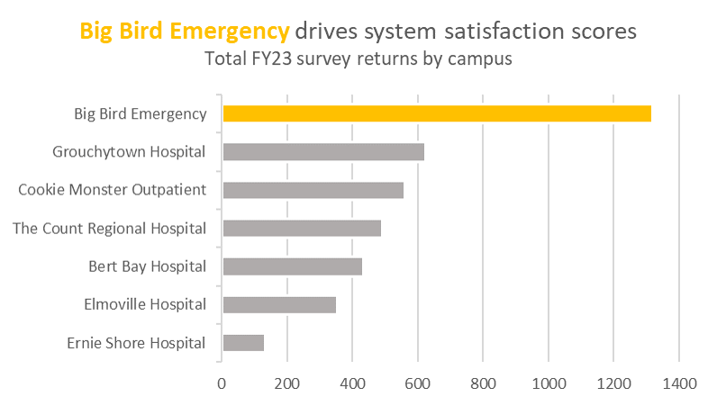

Putting together a good plot
Changing to a bar plot
The first order of business is to convert the plot from a pie chart to a bar plot. Pie charts are loved by executives but loathed by visualization practitioners, since information is encoded in each slice’s angle and differences in angle are difficult for the human eye to detect. Bar plots encode the same information with relative position on a scale, which is the most effective method for showing differences. This also has the added benefit in Excel of automatically converting each hospital to the same color, which reduces a lot of the visual noise that was in the original plot.
Flipping axes
In order to read the hospital names in the previous plot, viewers need to crane their necks to align with the axis text. The angled text also takes up a lot of whitespace and makes the important part — the actual data — look a bit squished. Changing to a horizontal bar plot alleviates both of these issues (horizontal bar plots are preferred over vertical ones in general for this reason).
Ordering the data
Unordered categories in a plot can be messy and visually confusing — the viewer’s eye needs to dart around to determine which values are greater than other ones. Ordering the categories reduces this cognitive load and allows the viewer to simply read through the list. In this case (and in most cases), we don’t care about the exact values (just the relative difference between values), so we can also remove the data labels.
To order a plot in Excel, we don’t actually need to do anything to the plot itself — simply turn the raw data into a table then arrange the rows by survey_returns:

Giving the plot a narrative

The original title, “FYTD Surveys”, while technically informative, is uninspiring. We’re putting together this plot to answer the specific question, why is the system satisfaction score 65% when most hospitals have a higher score? A good visualization will directly answer this without needing additional context from the analyst — the title is a great place to state that Big Bird Emergency is driving the system score down.
Also note that there are no axis labels on this plot. Axis labels are often unnecessary — they take up valuable whitespace with information that is either readily apparent (I don’t need a label to know that the y-axis refers to each hospital!) or encoded elsewhere. When possible, remove axis labels and describe the necessary detail elsewhere (i.e., the title or subtitle).
Highlighting the important bits

Color can be a great way to draw our attention to a particular portion of a plot. In this case, not all of the hospitals are equally important in this plot’s narrative — we’re making a distinct point regarding Big Bird Emergency. Highlighting the text and bar for Big Bird Emergency in yellow (Big Bird is, after all, a big yellow bird) while graying out the other bars visually communicates to the viewer this is the hospital deserving the most attention in this plot.
Realigning the plot
In the vast majority of cases, a left-aligned the title/subtitle is strongly preferred over center-aligned one. In western countries, we tend to naturally orient our attention in the top-left corner of plots when we first view them, then migrate our gaze downwards and leftwards (eye-tracking studies confirm this, however I can’t seem to find the source I heard this from, so you’ll just have to take my word for it here). By aligning the title to the left, we reduce how much the viewer needs to dart their eyes around the plot to understand it.
Adding the final touches

Adding some final formatting touches to polish up the visualization not only improves the quality of the plot but also shows the viewer that you’re serious about your craft and willing to go the extra mile to really make a visualization shine. In this case, applying comma-formatting to the x-axis, changing the font, and updating the background to an off-white are all minor edits, but their effects have a big impact on the visualization’s overall presentation.
{{% tweet "1495087213150879747" %}}